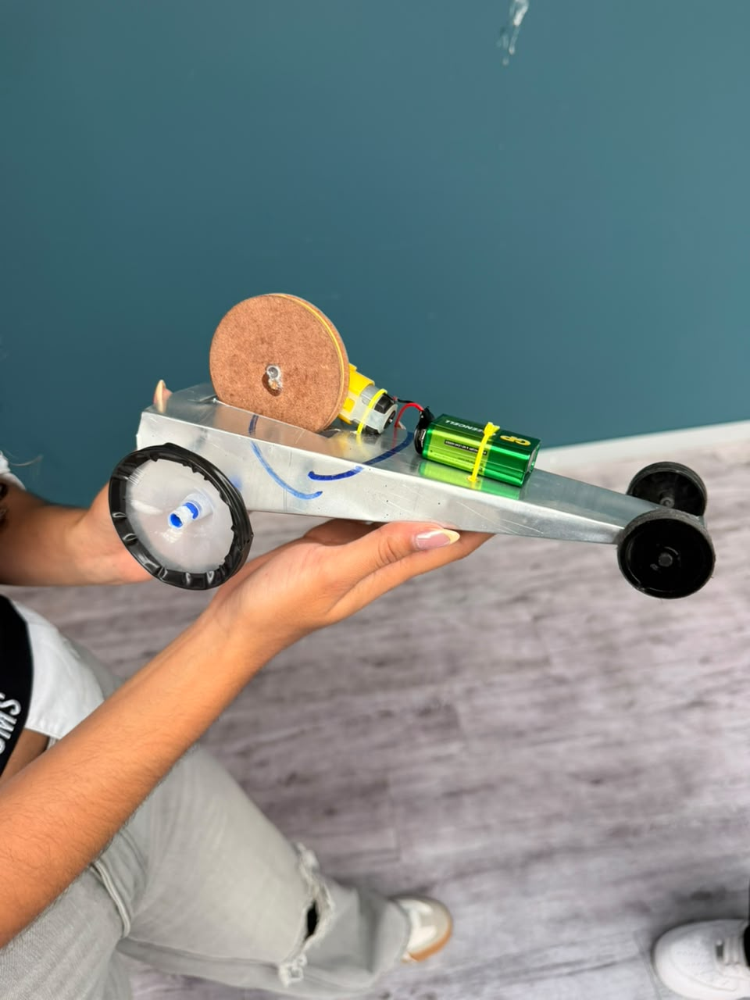
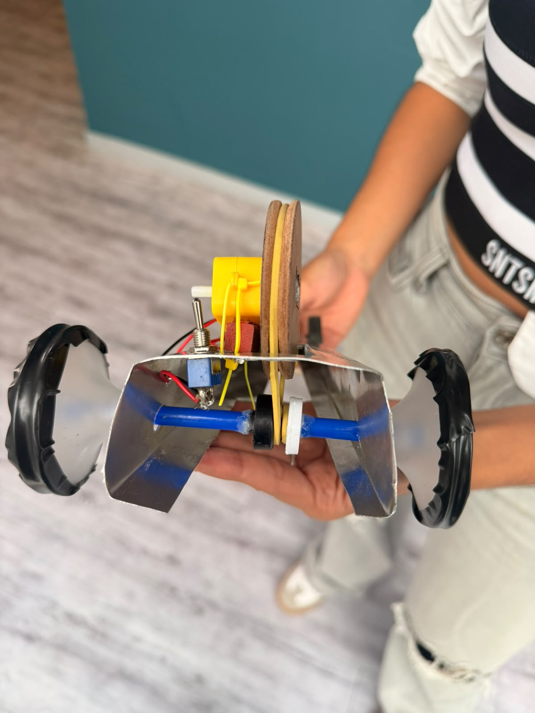

Sobre mí
Hola, soy Eliza, tengo 17 años y actualmente estudio Mecatrónica. Me considero una persona curiosa, responsable y con muchas ganas de aprender cosas nuevas. Disfruto enfrentar retos que me ayuden a crecer tanto personal como académicamente. Vivo con mis padres y mi hermano menor, quienes son una parte muy importante de mi vida y me motivan a seguir trabajando por mis sueños. Me gusta rodearme de personas que aporten cosas positivas y siempre busco dar lo mejor de mí en todo lo que hago.
Formación
- Bachiller Academico - Institución Educativa Villa Flora
Intereses
- Mis principales intereses son la robótica y la automatización.
- Me interesa el diseño, funcionamiento y mantenimiento de máquinas y sistemas mecatrónicos
Motivaciones
Mi papá es tecnologo electromecanico, él fue como una inspiración para mi con cada máquina y solución ingeniosa a los problemas. Además me gusta la robótica y mi deseo es participar en proyectos innovadores.
RETO TIERRA 1
Evidencias fotograficas



